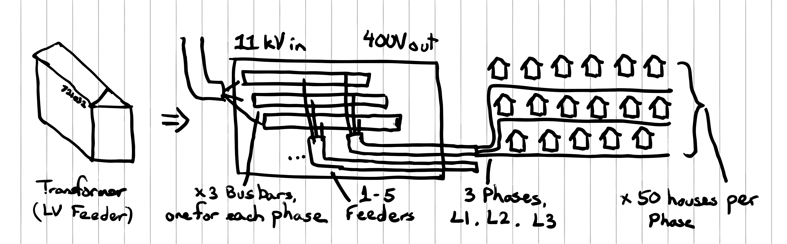

Analysing load profile of 11kv transformers, with 2 growth projections
As the UK works towards its Net Zero plans, we will replace fossil fuels with renewable electricity, causing a 2x - 3x increase in electricity consumption. This is an unprecedented growth in an electricity grid that has been static (sometimes declining) in load for the past 50 years, and something that the grid is not well prepared for.
Electric space and water heating will drive a 100% increase in household electricity consumption, and Electric cars will drive a 50% increase. These two large loads have some flexibility in when they're used, and the below analysis explores how much we can benefit from exploiting the thermal and electrical storage of these two large loads.
We found data for 50 substations across the NGED distribution area from this source. You might find the location of this substation at
Each substation has a busbar (piece of metal) with 1 - 5 feeder cables bolted on to it. Each feeder cable has 3 phases (wires) inside it (called L1, L2, or L3), and runs down the street. Most houses are connected to 1 phase only.

So what?
This data makes it clear that designing a distribution network for peak capacity is highly inefficient, and we need to start shifting the time that we consume electricity.
Load-shifting comes with the cost of installing the hardware to control our EVs and our space and water heaters, and the software to respond to LV transformer meter readings. There's likely also a cost of incentivising consumers to allow their heaters to turn down as the load nears peak.
All these costs combined need to outweigh the cost of installing new transformers and cables, which is the recommended further work from this analysis.